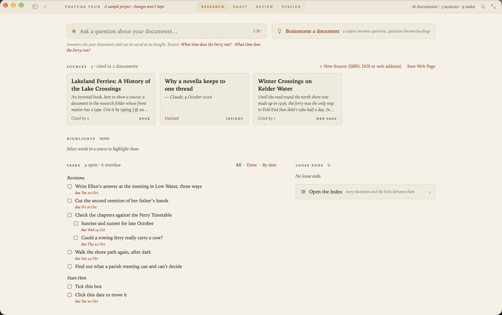
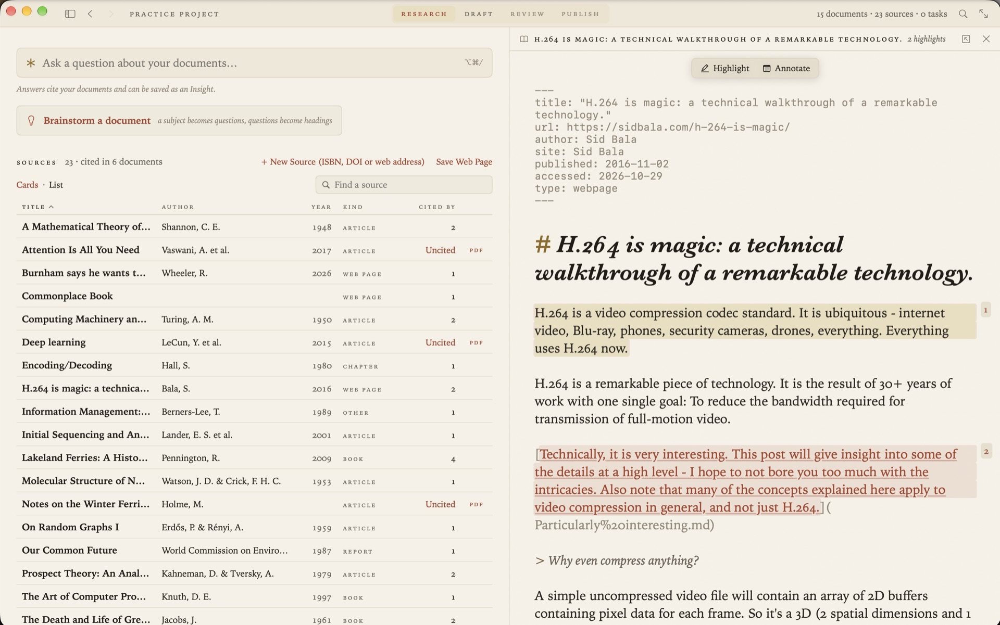

Markdown for research
Research piles up as web pages, PDFs, highlights and half-finished notes, usually in four different apps. Kept as Markdown files in one folder, it stays readable, searchable and yours. Grasmere is a Mac app built around that folder.

Why plain Markdown suits research
Research outlasts the tools it was done in. A note in a plain text file can be opened by any editor, searched by any tool, kept in git and read in ten years. A note in an app’s database lasts as long as the app.
Markdown adds a little structure to plain text. Headings, links, quotations and lists are enough for most notes, and a few lines at the top of a file can hold the details of the thing it’s about.
A source is a Markdown file
In Grasmere, each thing you’ve read is a document in the project’s research folder. Its details sit at the top, and whatever you write beneath them is your notes on it.
---
title: How Sourdough Rises
url: https://theloaf.example/2026/03/how-sourdough-rises/
author: Rosa Field
site: The Loaf
published: 2026-03-14
accessed: 2026-10-23
type: webpage
---Those are the details a citation needs, so anything in the folder is ready to cite.
Save web pages as Markdown
When you find a page worth keeping, choose Project ▸ Save Web Page and paste its address. Grasmere keeps the article and drops what’s around it, like menus, adverts and cookie banners. Headings, lists, quotes and tables come across as Markdown. You can save from Safari’s Share menu too.
Papers and books
A paper’s PDF dropped into the folder becomes a source, looked up by the DOI or arXiv number in its first pages. A book is added by its ISBN. A library kept in Zotero or another reference manager comes in as a BibTeX or CSL JSON file. See Using Zotero with Markdown.
Highlights, in one commonplace book
Select a passage in a saved page or a PDF and choose Highlight. The words are copied into highlights.md, under a heading for the document they came from.
# Highlights
## [Parish Records of Kelder, 1890–1940](Parish%20Records.md)
> The ferry ran until the ice came, and then the parish paid a boy to walk the shore.It’s ordinary Markdown, and you can edit it by hand. Annotate a passage and your note becomes a document of its own, linked from the words you marked. Highlights made in Readwise, or in Zotero’s PDF reader, can be imported into the same book.

Notes that link to each other
Link one note to another with an ordinary Markdown link. Each document shows which others link to it, so a source shows every note and chapter that draws on it. Rename or move a file, in Grasmere or in the Finder, and the links to it are rewritten to match.
Ask your own documents
When you can’t remember where you read something, ask. Ask Your Documents answers a question from your own notes and sources, with numbered citations that open the passage each came from. It reads what you highlighted first. By default it uses Apple’s on-device model, so the question and your documents stay on your Mac.
Loose ends
The Research stage keeps a list of what’s unfinished. Links that lead nowhere are there, each with a button to make the missing document. So are the sources you’ve gathered and never cited.
From notes to a draft
The same project holds what you’re writing. Type [@ in a chapter to cite a source, or use Quote on a highlight to drop it in as a block quote with its citation. When you export to Word or PDF, the citations and the reference list are written in APA, Harvard, Chicago or MLA.
Questions
Is my research uploaded anywhere?
No. There’s no account and Grasmere has no server. Your documents are files in a folder you chose. Grasmere fetches a web page when you ask it to save one, and looks up a DOI or ISBN when you ask.
Can I use my existing notes?
Yes. Open the folder they’re in. Any Markdown files are listed as they are. Move one into the research folder and Grasmere asks whether it’s a source or should stay as notes.
Does it work with an Obsidian vault?
Yes, a vault is a folder of Markdown files. See From Obsidian notes to a finished manuscript.
Keep your research in plain files.
Open a folder and save your first source. The trial is free for 14 days.
Download for macOS Free for 14 days, then $14.99 once · macOS 26+